Legal Act
Author: Takin.solutions Ltd.
Version: 1.0
Legal Act
A notarial activity such as a transfer of right, a transfer custody over an object, etc., or the legally binding establishment/annulment of a social role, such as procuration.
| Name | URI | |
|---|---|---|
| Root Ontology Node | E7 Activity | https://cidoc-crm.org/Entity/E7-Activity/version-7.1.1 |
| Type Differentiator | N/A | N/A |
| Filed ID | Name | Description | Data Type | CRM Path |
|---|---|---|---|---|
| LAF.6 | Name | This field is used to record the string value of the name attributed to the documented legal act. | String | ->p1->E33_E41[4_1]->p190->rdf:literal |
| LAF.5 | Name Type | This field is used to record the type of the name attributed to the documented legal act. | Concept | ->p1->E33_41[4_1]->p2->E55[5_1] |
| LAF.7 | Name Language | This field is used to record the language of the name attributed to the documented legal act. | Concept | ->p1->E33_E41[4_1]->p72->E56[7_1] |
| LAF.44 | Source Reference Work for Name | This field is used to link to a source text in which the name denoting the documented legal act is used. | Reference Model [DHIM.5_Legal Document ] | ->p1->E33_E41[4_1]->p67i->E33[44_1] |
| LAF.11 | Type | This field is used to record the formal type of the documented legal act. | Concept | ->p2->E55[11_1] |
| LAF.12 | Meta-type | This field is used to record the metatype attributed to a formal classification. The function of a metatype is to enable the programmatic distinction between different kinds of type applied to the same documented entity. | Concept | ->p2->E55[11_1]->p2->E55 [12_1] |
| LAF.15 | Statement | This field is used to record the actual textual content of the statement describing the documented legal act. | String | ->p67i->E33[13_1]->p190->rdf:literal |
| LAF.14 | Statement Type | This field is used to record the formal type of the statement made about the documented legal act. | Concept | ->p67i->E33[13_1]->p2->E55[14_1] |
| LAF.16 | Statement Language | This field is used to record the language of the statement describing the documented legal act. | Concept | ->p67i->E33[13_1]->p72->E56[16_1] |
| LAF.55 | Source Reference Work for Statement | This field is used to link to a source text from which the statement describing the documented legal act is derived. | Reference Model [DHIM.5_Legal Document ] | ->p67i->E33[13_1]->p67i->E33[55_1] |
| LAF.25 | Begin of the Begin | This field is used to record the earliest possible start date for the timespan of the documented legal act. | Date | ->p4->E52[22_1]->p82a->xsl:date |
| LAF.23 | End of the Begin | This field is used to record the latest possible start date for the timespan of the documented legal act. | Date | ->p4->E52[22_1]->p81a->xsl:date |
| LAF.24 | Begin of the End | This field is used to record the earliest possible end date for the timespan of the documented legal act. | Date | ->p4->E52[22_1]->p81b->xsl:date |
| LAF.26 | End of the End | This field is used to record the latest possible end date for the timespan of the documented legal act. | Date | ->p4->E52[22_1]->p82b->xsl:date |
| LAF.19 | Location of Activity | This field is used to link the documented legal act to an instance of place at which it occurred. | Reference Model [DHIM.3_Place] | ->p7->E53[19_1] |
| DHIF.8 | actor with role in activity | This field is used to link the documented legal act to an actor that plays a typified role in that activity. | Reference Model [DHIM.1_Person; DHIM.2_Group] | ->P01i->PC14[DHIF.8_1]->P02->E39_Actor[DHIF.8_2] |
| DHIF.9 | role of actor in activity | This field is used to record the role played by an actor in an activity with typified roles. | Concept | ->P01i->PC14[DHIF.8_1]->P14.1->E55_Type[DHIF.9_1] |
| LAF.21 | generic actor in activity | This field is used to link the documented legal act to an instance of actor who was causally, but otherwise generically, involved in the execution of the activity. | Reference Model [DHIM.1_Person; DHIM.2_Group] | ->p14->E39[21_1] |
| DHIF.10 | property right transfer type | This field is used to record the formal type of the documented property right transfer. | Concept | ->P9->ZE29[DHIF.10_1]->P2->E55[DHIF.10_2] |
| DHIF.11 | property right transfer generic actor receiving | This field is used to link the documented property right transfer to the actor who received property right in the transfer. | Reference Model [DHIM.1_Person; DHIM.2_Group] | ->P9->ZE29[DHIF.10_1]->ZP61->E39[DHIF.11_1] |
| DHIF.12 | property right transfer generic actor ceding | This field is used to link the documented property right transfer to the actor who surrendered property right in the transfer. | Reference Model [DHIM.1_Person; DHIM.2_Group] | ->P9->ZE29[DHIF.10_1]->ZP62->E39[DHIF.12_1] |
| DHIF.13 | object of property right transfer | This field is used to link the documented property right transfer to the object over which property right is transferred. | Reference Model [DHIM.4_Physical Object] | ->P9->ZE29[DHIF.10_1]->ZP63->E72[DHIF.13_1] |
| DHIF.14 | property right transfer actor with role receiving | This field is used to link the documented transfer of property right to an actor that plays a typified role in the reception of right in the transfer. | Reference Model [DHIM.1_Person; DHIM.2_Group] | ->P9->ZE29[DHIF.10_1]->P01i->ZPC61[DHIF.14_1]->P02->E39_Actor[DHIF.14_2] |
| DHIF.15 | property right transfer role of actor receiving | This field is used to record the role played by an actor receiving right in a transfer of property rights with typified roles. | Concept | ->P9->ZE29[DHIF.10_1]->P01i->ZPC61[DHIF.14_1]->ZP61.1->E55_Type[DHIF.15_1] |
| DHIF.16 | property right transfer actor with role ceding | This field is used to link the documented transfer of property right to an actor that plays a typified role in the cession of right in the transfer. | Reference Model [DHIM.1_Person; DHIM.2_Group] | ->P9->ZE29[DHIF.10_1]->P01i->ZPC62[DHIF.16_1]->P02->E39_Actor[DHIF.16_2] |
| DHIF.17 | property right transfer role of actor ceding | This field is used to record the role played by an actor ceding rights in a transfer of property rights with typified roles. | Concept | ->P9->ZE29[DHIF.10_1]->P01i->ZPC62[DHIF.16_1]->ZP62.1->E55_Type[DHIF.17_1] |
| DHIF.18 | initiated property right status | This field is used to link the documented property right transfer to the property right status which the transfer initiates. | Reference Model [DHIM.7_Property Right Status] | ->P9->ZE29[DHIF.10_1]->ZP42->ZE30[DHIF.18_1] |
| DHIF.19 | annulled property right status | This field is used to link the documented property right transfer to the property right status which the transfer annuls. | Reference Model [DHIM.7_Property Right Status] | ->P9->ZE29[DHIF.10_1]->ZP52->ZE30[DHIF.19_1] |
| DHIF.20 | obligation type | This field is used to record the formal type of the documented declaration of obligation. | Concept | ->P9->ZE27[DHIF.20_1]->P2->E55[DHIF.20_2] |
| DHIF.21 | obligation generic actor owing | This field is used to link the documented declaration of obligation to an actor who owes in the obligation. | Reference Model [DHIM.1_Person; DHIM.2_Group] | ->P9->ZE27[DHIF.20_1]->ZP67->E39[DHIF.21_1] |
| DHIF.22 | obligation generic actor owed | This field is used to link the documented declaration of obligation to an actor who is owed in the obligation. | Reference Model [DHIM.1_Person; DHIM.2_Group] | ->P9->ZE27[DHIF.20_1]->ZP68->E39[DHIF.22_1] |
| DHIF.23 | amount owed in obligation | This field is used to record the extent of obligation in the documented declaration of obligation, wherein one actor owes another. | Collection [LAP.8_Dimension] | ->P9->ZE27[DHIF.20_1]->ZP69->E54[DHIF.23_1] |
| DHIF.24 | obligation actor with role owing | This field is used to link the documented declaration of obligation to an actor that plays a typified role in owing via the declaration. | Reference Model [DHIM.1_Person; DHIM.2_Group] | ->P9->ZE27[DHIF.20_1]->P01i->ZPC67[DHIF.24_1]->P02->E39_Actor[DHIF.24_2] |
| DHIF.25 | obligation role of actor owing | This field is used to record the role played by an actor who owes in a declaration of obligation with typified roles. | Concept | ->P9->ZE27[DHIF.20_1]->P01i->ZPC67[DHIF.24_1]->ZP67.1->E55_Type[DHIF.25_1] |
| DHIF.26 | obligation actor with role owed | This field is used to link the documented declaration of obligation to an actor that plays a typified role in being owed via the declaration. | Reference Model [DHIM.1_Person; DHIM.2_Group] | ->P9->ZE27[DHIF.20_1]->p01i->ZPC68[DHIF.26_1]->P02->E39_Actor[DHIF.26_2] |
| DHIF.27 | obligation role of actor owed | This field is used to record the role played by an actor who is owed in a declaration of obligation. | Concept | ->P9->ZE27[DHIF.20_1]->P01i->ZPC68[DHIF.26_1]->ZP68.1->E55_Type[DHIF.27_1] |
| DHIF.28 | initiated obligation status | This field is used to link the documented declaration of obligation to the obligation status which the declaration initiates. | Reference Model [DHIM.10_Obligation Status] | ->P9->ZE27[DHIF.20_1]->ZP42->ZE28[DHIF.28_1] |
| DHIF.29 | annulled obligation status | This field is used to link the documented declaration of obligation to the obligation status which the declaration annuls. | Reference Model [DHIM.10_Obligation Status] | ->P9->ZE27[DHIF.20_1]->ZP52->ZE28[DHIF.29_1] |
| DHIF.30 | declarative acquisition type | This field is used to record the formal type of the documented declarative acquisition. | Concept | ->P9->ZE20[DHIF.30_1]->P2->E55[DHIF.30_2] |
| DHIF.31 | declarative acquisition generic actor receiving | This field is used to link the documented declarative acquisition to the actor who received title in the transfer. | Reference Model [DHIM.1_Person; DHIM.2_Group] | ->P9->ZE20[DHIF.30_1]->P22->E39[DHIF.31_1] |
| DHIF.32 | declarative acquisition generic actor ceding | This field is used to link the documented declarative acquisition to the actor who ceding title in the transfer. | Reference Model [DHIM.1_Person; DHIM.2_Group] | ->P9->ZE20[DHIF.30_1]->P23->E39[DHIF.32_1] |
| DHIF.33 | declarative acquisition object transferred | This field is used to link the documented declarative acquisition to the object over which title is transferred. | Reference Model [DHIM.4_Physical Object] | ->P9->ZE20[DHIF.30_1]->P24->E18[DHIF.33_1] |
| DHIF.34 | declarative acquisition actor with role owing | This field is used to link the documented declarative acquisition to an actor that plays a typified role in receiving via the declaration. | Reference Model [DHIM.1_Person; DHIM.2_Group] | ->P9->ZE20[DHIF.30_1]->p01i->PC22[DHIF.34_1]->P02->E39_Actor[DHIF.34_2] |
| DHIF.35 | declarative acquisition role of actor owing | This field is used to record the role played by an actor who receives in a declarative acquisition with typified roles. | Concept | ->P9->ZE20[DHIF.30_1]->p01i->PC22[DHIF.34_1]->P22.1->E55_Type[DHIF.35_1] |
| DHIF.36 | declarative acquisition actor with role owed | This field is used to link the documented declarative acquisition to an actor that plays a typified role in ceding via the declaration. | Reference Model [DHIM.1_Person; DHIM.2_Group] | ->P9->ZE20[DHIF.30_1]->p01i->PC23[DHIF.36_1]->P02->E39_Actor[DHIF.36_2] |
| DHIF.37 | declarative acquisition role of actor owed | This field is used to record the role played by an actor who cedes in a declarative acquisition. | Concept | ->P9->ZE20[DHIF.30_1]->p01i->PC23[DHIF.36_1]->P23.1->E55_Type[DHIF.37_1] |
| DHIF.38 | initiated ownership status | This field is used to link the documented declarative acquisition to the ownership status which the declaration initiates. | Reference Model [DHIM.8_Ownership Status] | ->P9->ZE20[DHIF.30_1]->ZP42->ZE8[DHIF.38_1] |
| DHIF.39 | annulled ownership status | This field is used to link the documented declarative acquisition to the ownership status which the declaration annuls. | Reference Model [DHIM.8_Ownership Status] | ->P9->ZE20[DHIF.30_1]->ZP52->ZE8[DHIF.39_1] |
| DHIF.40 | declarative custody transfer type | This field is used to record the formal type of the documented declarative transfer of custody. | Concept | ->P9->ZE21[DHIF.40_1]->P2->E55[DHIF.40_2] |
| DHIF.41 | declarative custody transfer generic actor surrendering | This field is used to link the documented declarative transfer of custody to the actor who surrendered custody in the transfer. | Reference Model [DHIM.1_Person; DHIM.2_Group] | ->P9->ZE21[DHIF.40_1]->P28->E39[DHIF.41_1] |
| DHIF.42 | declarative custody transfer generic actor receiving | This field is used to link the documented declarative transfer of custody to the actor who received custody in the transfer. | Reference Model [DHIM.1_Person; DHIM.2_Group] | ->P9->ZE21[DHIF.40_1]->P29->E39[DHIF.42_1] |
| DHIF.43 | declarative custody transfer object transferred | This field is used to link the documented declarative transfer of custody to the object of which custody is transferred. | Reference Model [DHIM.4_Physical Object] | ->P9->ZE21[DHIF.40_1]->P30->E18[DHIF.43_1] |
| DHIF.44 | declarative custody transfer actor with role surrendering | This field is used to link the documented declarative transfer of custody to an actor that plays a typified role in surrendering custody via the declaration. | Reference Model [DHIM.1_Person; DHIM.2_Group] | ->P9->ZE21[DHIF.40_1]->P01i->PC28[DHIF.44_1]->P02->E39_Actor[DHIF.44_2] |
| DHIF.45 | declarative custody transfer role of actor surrendering | This field is used to record the role played by an actor who surrenders custody in a declarative transfer of custody with typified roles. | Concept | ->P9->ZE21[DHIF.40_1]->P01i->PC28[DHIF.44_1]->P28.1->E55_Type[DHIF.45_1] |
| DHIF.46 | declarative custody transfer actor with role receiving | This field is used to link the documented declarative transfer of custody to an actor that plays a typified role in receiving custody via the declaration. | Reference Model [DHIM.1_Person; DHIM.2_Group] | ->P9->ZE21[DHIF.40_1]->p01i->PC29[DHIF.46_1]->P02->E39_Actor[DHIF.46_2] |
| DHIF.47 | declarative custody transfer role of actor receiving | This field is used to record the role played by an actor who receives custody in a declarative transfer of custody with typified roles. | Concept | ->P9->ZE21[DHIF.40_1]->P01i->PC29[DHIF.46_1]->P29.1->E55_Type[DHIF.47_1] |
| DHIF.48 | initiated custodial status | This field is used to link the documented declarative transfer of custody to the custodial status which the declaration initiates. | Reference Model [DHIM.9_Custodial Status] | ->P9->ZE21[DHIF.40_1]->ZP42->ZE7[DHIF.48_1] |
| DHIF.49 | annulled custodial status | This field is used to link the documented declarative transfer of custody to the custodial status which the declaration annuls. | Reference Model [DHIM.9_Custodial Status] | ->P9->ZE21[DHIF.40_1]->ZP52->ZE7[DHIF.49_1] |
| DHIF.50 | role assignment type | This field is used to record the formal type of the documented role assignment. | Concept | ->P9->E17[DHIF.50_1]->P2->E55[DHIF.50_2] |
| DHIF.51 | initiated social status | This field is used to link the documented role assignment to the social status it initiates. | Reference Model [DHIM.11_Social Status] | ->P9->E17[DHIF.50_1]->ZP42->ZE6[DHIF.51_1] |
| DHIF.52 | annulled social status | This field is used to link the documented role assignment to the social status which it annuls. | Reference Model [DHIM.11_Social Status] | ->P9->E17[DHIF.50_1]->ZP52->ZE6[DHIF.52_1] |
| DHIF.149 | group role assignment type | This field is used to record the formal type of the documented group role assignment. | Concept | ->P9->ZE31[DHIF.149_1]->P2->E55[DHIF.149_2] |
| DHIF.150 | initiated institutional status | This field is used to link the documented group role assignment to the institutional status it initiates. | Reference Model [DHIM.12_Institutional Status] | ->P9->ZE31[DHIF.149_1]->ZP42->ZE32[DHIF.150_1] |
| DHIF.151 | annulled institutional status | This field is used to link the documented group role assignment to the institutional status which it annuls. | Reference Model [DHIM.12_Institutional Status] | ->P9->ZE31[DHIF.149_1]->ZP52->ZE32[DHIF.151_1] |
| LAF.39 | Source Reference Work | This field is used to link the documented legal act to an instance of textual work which references it. | Reference Model [DHIM.5_Legal Document] | ->p67i->E33[39_1] |
| PIRF.426 | Digital Reference | This field is used to link the documented legal act to a digital object, expressed as a uri, which describes it. | uri | ->P67i->D1[426_1] |
| PIRF.427 | Digital Reference Type | This field is used to indicate the type of a a digital object, expressed as a uri, which describes the documented legal act. | Concept | ->P67i->D1[426_1]->P2->E55[427_1] |
- Legal Act Ontology Graph
[to view the image right click 'open image in a new tab'] 
- Legal Act RDF
@prefix crm: <http://www.cidoc-crm.org/cidoc-crm/> .
@prefix crmaaa: <https://takin.solutions/ontologies/crmaaa/> .
@prefix rdfs: <http://www.w3.org/2000/01/rdf-schema#> .
<https://linked.art/example/conceptual_object/DHIF.9_1> a crm:E55_Type .
<https://linked.art/example/models/speech_act> a crmaaa:ZE13_Speech_Act ;
crm:P01i_is_domain_of <https://linked.art/example/reified_property/DHIF.8_1> ;
crm:P14_carried_out_by <https://linked.art/example/actor/21_1> ;
crm:P1_is_identified_by <https://linked.art/example/conceptual_object/4_1> ;
crm:P2_has_type <https://linked.art/example/type/11_1> ;
crm:P4_has_time-span <https://linked.art/example/time_span/22_1> ;
crm:P67i_is_referred_to_by <https://linked.art/example/conceptual_object/13_1>,
<https://linked.art/example/conceptual_object/39_1>,
<https://linked.art/example/conceptual_object/426_1> ;
crm:P7_took_place_at <https://linked.art/example/place/19_1> ;
crm:P9_consists_of <https://linked.art/example/event/DHIF.50_1>,
<https://takin.solutions/ontologies/crmaaa/speech_act/DHIF.10_1>,
<https://takin.solutions/ontologies/crmaaa/speech_act/DHIF.149_1>,
<https://takin.solutions/ontologies/crmaaa/speech_act/DHIF.20_1>,
<https://takin.solutions/ontologies/crmaaa/speech_act/DHIF.30_1>,
<https://takin.solutions/ontologies/crmaaa/speech_act/DHIF.40_1> .
<http://vocab.getty.edu/aat/300418049> a crm:E55_Type .
<http://vocab.getty.edu/page/aat/300404670> a crm:E55_Type ;
rdfs:label "preferred terms" .
<https://linked.art/example/actor/21_1> a crm:E39_Actor .
<https://linked.art/example/actor/DHIF.11_1> a crm:E39_Actor .
<https://linked.art/example/actor/DHIF.12_1> a crm:E39_Actor .
<https://linked.art/example/actor/DHIF.14_2> a crm:E39_Actor .
<https://linked.art/example/actor/DHIF.16_2> a crm:E39_Actor .
<https://linked.art/example/actor/DHIF.21_1> a crm:E39_Actor .
<https://linked.art/example/actor/DHIF.22_1> a crm:E39_Actor .
<https://linked.art/example/actor/DHIF.24_2> a crm:E39_Actor .
<https://linked.art/example/actor/DHIF.26_2> a crm:E39_Actor .
<https://linked.art/example/actor/DHIF.31_1> a crm:E39_Actor .
<https://linked.art/example/actor/DHIF.32_1> a crm:E39_Actor .
<https://linked.art/example/actor/DHIF.34_2> a crm:E39_Actor .
<https://linked.art/example/actor/DHIF.36_2> a crm:E39_Actor .
<https://linked.art/example/actor/DHIF.41_1> a crm:E39_Actor .
<https://linked.art/example/actor/DHIF.42_1> a crm:E39_Actor .
<https://linked.art/example/actor/DHIF.44_2> a crm:E39_Actor .
<https://linked.art/example/actor/DHIF.46_2> a crm:E39_Actor .
<https://linked.art/example/actor/DHIF.8_2> a crm:E39_Actor .
<https://linked.art/example/conceptual_object/13_1> a crm:E33_Linguistic_Object ;
crm:P190_has_symbolic_content "Statement_string_content" ;
crm:P2_has_type <https://linked.art/example/type/14_1> ;
crm:P67i_is_referred_to_by <https://linked.art/example/statement/55_1> ;
crm:P72_has_language <https://linked.art/example/type/16_1> .
<https://linked.art/example/conceptual_object/39_1> a crm:E33_Linguistic_Object .
<https://linked.art/example/conceptual_object/426_1> a crm:D1_Digital_Object ;
crm:P2_has_type <https://linked.art/example/type/427_1> .
<https://linked.art/example/conceptual_object/4_1> a crm:E33_E41_Linguistic_Appellation ;
crm:P190_has_symbolic_content "Name_string_value" ;
crm:P2_has_type <http://vocab.getty.edu/page/aat/300404670> ;
crm:P67i_is_referred_to_by <https://linked.art/example/textual_object/44_1> ;
crm:P72_has_language <https://linked.art/example/type/7_1> .
<https://linked.art/example/dimension/DHIF.23_1> a crm:E54_Dimension .
<https://linked.art/example/event/DHIF.50_1> a crm:E17_Type_Assignment ;
crm:P2_has_type <https://linked.art/example/type/DHIF.50_2> ;
crmaaa:ZP42_intentionally_initiates <https://takin.solutions/ontologies/crmaaa/institutional_fact/DHIF.51_1> ;
crmaaa:ZP52_intentionally_terminates <https://takin.solutions/ontologies/crmaaa/institutional_fact/DHIF.52_1> .
<https://linked.art/example/physical_object/DHIF.33_1> a crm:E18_Physical_Object .
<https://linked.art/example/physical_object/DHIF.43_1> a crm:E18_Physical_Object .
<https://linked.art/example/place/19_1> a crm:E53_Place .
<https://linked.art/example/reified_property/DHIF.34_1> a crm:PC22_transferred_title_to ;
crm:P02_has_range <https://linked.art/example/actor/DHIF.34_2> ;
crm:P22.1_in_role_of <https://linked.art/example/type/DHIF.35_1> .
<https://linked.art/example/reified_property/DHIF.44_1> a crm:PC28_custody_surrendeed_by,
crm:PC28_custody_surrendered_by ;
crm:P02_has_range <https://linked.art/example/actor/DHIF.44_2> ;
crm:P28.1_in_role_of <https://linked.art/example/type/DHIF.45_1> .
<https://linked.art/example/reified_property/DHIF.46_1> a crm:PC29_custody_received_by ;
crm:P02_has_range <https://linked.art/example/actor/DHIF.46_2> ;
crm:P29.1_in_role_of <https://linked.art/example/type/DHIF.47_1> .
<https://linked.art/example/reified_property/DHIF.8_1> a crm:PC14_carried_out_by ;
crm:P02_has_range <https://linked.art/example/actor/DHIF.8_2> ;
crm:P14.1_in_role_of <https://linked.art/example/type/DHIF.9_1> .
<https://linked.art/example/statement/55_1> a crm:E33_Linguistic_Object .
<https://linked.art/example/textual_object/44_1> a crm:E33_Linguistic_Object .
<https://linked.art/example/thing/DHIF.13_1> a crm:E72_Legal_Object .
<https://linked.art/example/time_span/22_1> a crm:E52_Time-Span ;
crm:P81a_end_of_the_begin "2000-01-01T09:00:00" ;
crm:P81b_begin_of_the_end "2000-01-01T09:00:00" ;
crm:P82a_begin_of_the_begin "2000-01-01T09:00:00" ;
crm:P82b_end_of_the_end "2000-01-01T09:00:00" .
<https://linked.art/example/type/11_1> a crm:E55_Type ;
crm:P2_has_type <https://linked.art/example/type/12_1> .
<https://linked.art/example/type/12_1> a crm:E55_Type .
<https://linked.art/example/type/14_1> a crm:E55_Type ;
crm:P2_has_type <http://vocab.getty.edu/aat/300418049> .
<https://linked.art/example/type/16_1> a crm:E56_Language .
<https://linked.art/example/type/427_1> a crm:E55_Type .
<https://linked.art/example/type/7_1> a crm:E56_Language .
<https://linked.art/example/type/DHIF.10_2> a crm:E55_Type .
<https://linked.art/example/type/DHIF.149_2> a crm:E55_Type .
<https://linked.art/example/type/DHIF.15_1> a crm:E55_Type .
<https://linked.art/example/type/DHIF.17_1> a crm:E55_Type .
<https://linked.art/example/type/DHIF.20_2> a crm:E55_Type .
<https://linked.art/example/type/DHIF.25_1> a crm:E55_Type .
<https://linked.art/example/type/DHIF.27_1> a crm:E55_Type .
<https://linked.art/example/type/DHIF.30_2> a crm:E55_Type .
<https://linked.art/example/type/DHIF.35_1> a crm:E55_Type .
<https://linked.art/example/type/DHIF.37_1> a crm:E55_Type .
<https://linked.art/example/type/DHIF.40_2> a crm:E55_Type .
<https://linked.art/example/type/DHIF.45_1> a crm:E55_Type .
<https://linked.art/example/type/DHIF.47_1> a crm:E55_Type .
<https://linked.art/example/type/DHIF.50_2> a crm:E55_Type .
<https://linked.art/example/type/DHIF.9_1> a crm:E55_Type .
<https://takin.solutions/ontologies/crmaaa/institutional_fact/DHIF.150_1> a crmaaa:ZE32_Institutional_Status .
<https://takin.solutions/ontologies/crmaaa/institutional_fact/DHIF.151_1> a crmaaa:ZE32_Institutional_Status .
<https://takin.solutions/ontologies/crmaaa/institutional_fact/DHIF.18_1> a crmaaa:ZE30_Property_Right_Status .
<https://takin.solutions/ontologies/crmaaa/institutional_fact/DHIF.19_1> a crmaaa:ZE30_Property_Right_Status .
<https://takin.solutions/ontologies/crmaaa/institutional_fact/DHIF.28_1> a crmaaa:ZE28_Obligation_Status .
<https://takin.solutions/ontologies/crmaaa/institutional_fact/DHIF.29_1> a crmaaa:ZE28_Obligation_Status .
<https://takin.solutions/ontologies/crmaaa/institutional_fact/DHIF.38_1> a crmaaa:ZE28_Obligation_Status .
<https://takin.solutions/ontologies/crmaaa/institutional_fact/DHIF.39_1> a crmaaa:ZE28_Obligation_Status .
<https://takin.solutions/ontologies/crmaaa/institutional_fact/DHIF.48_1> a crmaaa:ZE7_Custodial_Status .
<https://takin.solutions/ontologies/crmaaa/institutional_fact/DHIF.49_1> a crmaaa:ZE7_Custodial_Status .
<https://takin.solutions/ontologies/crmaaa/institutional_fact/DHIF.51_1> a crmaaa:ZE6_Social_Status .
<https://takin.solutions/ontologies/crmaaa/institutional_fact/DHIF.52_1> a crmaaa:ZE6_Social_Status .
<https://takin.solutions/ontologies/crmaaa/reified_property/DHIF.14_1> a crmaaa:ZPC61_transferred_property_right_to ;
crm:P02_has_range <https://linked.art/example/actor/DHIF.14_2> ;
crmaaa:ZP61.1_in_role_of <https://linked.art/example/type/DHIF.15_1> .
<https://takin.solutions/ontologies/crmaaa/reified_property/DHIF.16_1> a crmaaa:ZPC62_transferred_property_right_from ;
crm:P02_has_range <https://linked.art/example/actor/DHIF.16_2> ;
crmaaa:ZP62.1_in_role_of <https://linked.art/example/type/DHIF.17_1> .
<https://takin.solutions/ontologies/crmaaa/reified_property/DHIF.24_1> a crmaaa:ZPC67_generated_obligation_upon ;
crm:P02_has_range <https://linked.art/example/actor/DHIF.24_2> ;
crmaaa:ZP67.1_in_role_of <https://linked.art/example/type/DHIF.25_1> .
<https://takin.solutions/ontologies/crmaaa/reified_property/DHIF.26_1> a crmaaa:ZPC68_generated_obligation_to ;
crm:P02_has_range <https://linked.art/example/actor/DHIF.26_2> ;
crmaaa:ZP68.1_in_role_of <https://linked.art/example/type/DHIF.27_1> .
<https://takin.solutions/ontologies/crmaaa/speech_act/DHIF.10_1> a crmaaa:ZE29_Transfer_of_Property_Right ;
crm:P01i_is_domain_of <https://takin.solutions/ontologies/crmaaa/reified_property/DHIF.14_1>,
<https://takin.solutions/ontologies/crmaaa/reified_property/DHIF.16_1> ;
crm:P2_has_type <https://linked.art/example/type/DHIF.10_2> ;
crmaaa:ZP42_intentionally_initiates <https://takin.solutions/ontologies/crmaaa/institutional_fact/DHIF.18_1> ;
crmaaa:ZP52_intentionally_terminates <https://takin.solutions/ontologies/crmaaa/institutional_fact/DHIF.19_1> ;
crmaaa:ZP61_transferred_property_right_to <https://linked.art/example/actor/DHIF.11_1> ;
crmaaa:ZP62_transferred_property_right_from <https://linked.art/example/actor/DHIF.12_1> ;
crmaaa:ZP63_transferred_property_right_from <https://linked.art/example/thing/DHIF.13_1> .
<https://takin.solutions/ontologies/crmaaa/speech_act/DHIF.149_1> a crmaaa:ZE31_Group_Role_Assignment ;
crm:P2_has_type <https://linked.art/example/type/DHIF.149_2> ;
crmaaa:ZP42_intentionally_initiates <https://takin.solutions/ontologies/crmaaa/institutional_fact/DHIF.150_1> ;
crmaaa:ZP52_intentionally_terminates <https://takin.solutions/ontologies/crmaaa/institutional_fact/DHIF.151_1> .
<https://takin.solutions/ontologies/crmaaa/speech_act/DHIF.20_1> a crmaaa:ZE27_Declaration_of_Obligation ;
crm:P01i_is_domain_of <https://takin.solutions/ontologies/crmaaa/reified_property/DHIF.24_1>,
<https://takin.solutions/ontologies/crmaaa/reified_property/DHIF.26_1> ;
crm:P2_has_type <https://linked.art/example/type/DHIF.20_2> ;
crmaaa:ZP42_intentionally_initiates <https://takin.solutions/ontologies/crmaaa/institutional_fact/DHIF.28_1> ;
crmaaa:ZP52_intentionally_terminates <https://takin.solutions/ontologies/crmaaa/institutional_fact/DHIF.29_1> ;
crmaaa:ZP67_generated_obligation_upon <https://linked.art/example/actor/DHIF.21_1> ;
crmaaa:ZP68_generated_obligation_to <https://linked.art/example/actor/DHIF.22_1> ;
crmaaa:ZP69_generated_obligation_of <https://linked.art/example/dimension/DHIF.23_1> .
<https://takin.solutions/ontologies/crmaaa/speech_act/DHIF.30_1> a crmaaa:ZE20_Declaration_of_Acquisition,
crmaaa:ZE20_Declarative_Acquisition ;
crm:P01i_is_domain_of <https://linked.art/example/reified_property/DHIF.34_1>,
<https://linked.art/example/reified_property/DHIF.36_1> ;
crm:P22_transferred_title_to <https://linked.art/example/actor/DHIF.31_1> ;
crm:P23_transferred_title_from <https://linked.art/example/actor/DHIF.32_1> ;
crm:P24_transferred_title_over <https://linked.art/example/physical_object/DHIF.33_1> ;
crm:P2_has_type <https://linked.art/example/type/DHIF.30_2> ;
crm:p01i_is_domain_of <https://linked.art/example/reified_property/DHIF.36_1> ;
crmaaa:ZP42_intentionally_initiates <https://takin.solutions/ontologies/crmaaa/institutional_fact/DHIF.38_1> ;
crmaaa:ZP52_intentionally_terminates <https://takin.solutions/ontologies/crmaaa/institutional_fact/DHIF.39_1> .
<https://takin.solutions/ontologies/crmaaa/speech_act/DHIF.40_1> a crmaaa:ZE21_Declarative_Transfer_of_Custody ;
crm:P01i_is_domain_of <https://linked.art/example/reified_property/DHIF.44_1>,
<https://linked.art/example/reified_property/DHIF.46_1> ;
crm:P28_custody_surrendered_by <https://linked.art/example/actor/DHIF.41_1> ;
crm:P29_custody_received_by <https://linked.art/example/actor/DHIF.42_1> ;
crm:P2_has_type <https://linked.art/example/type/DHIF.40_2> ;
crm:P30_transferred_custody_of <https://linked.art/example/physical_object/DHIF.43_1> ;
crmaaa:ZP42_intentionally_initiates <https://takin.solutions/ontologies/crmaaa/institutional_fact/DHIF.48_1> ;
crmaaa:ZP52_intentionally_terminates <https://takin.solutions/ontologies/crmaaa/institutional_fact/DHIF.49_1> .
<https://linked.art/example/reified_property/DHIF.36_1> a crm:PC23_transferred_title_from ;
crm:P02_has_range <https://linked.art/example/actor/DHIF.36_2> ;
crm:P23.1_in_role_of <https://linked.art/example/type/DHIF.37_1> .
- Legal Act JSON-LD
{
"@context": "https://linked.art/ns/v1/linked-art.json",
"@graph": [
{
"id": "https://linked.art/example/place/19_1",
"type": "Place"
},
{
"id": "https://linked.art/example/dimension/DHIF.23_1",
"type": "Dimension"
},
{
"crm:P02_has_range": {
"id": "https://linked.art/example/actor/DHIF.14_2"
},
"https://takin.solutions/ontologies/crmaaa/ZP61.1_in_role_of": {
"id": "https://linked.art/example/type/DHIF.15_1"
},
"id": "https://takin.solutions/ontologies/crmaaa/reified_property/DHIF.14_1",
"type": "https://takin.solutions/ontologies/crmaaa/ZPC61_transferred_property_right_to"
},
{
"id": "https://linked.art/example/actor/DHIF.21_1",
"type": "Actor"
},
{
"id": "https://linked.art/example/type/DHIF.40_2",
"type": "Type"
},
{
"id": "https://takin.solutions/ontologies/crmaaa/institutional_fact/DHIF.18_1",
"type": "https://takin.solutions/ontologies/crmaaa/ZE30_Property_Right_Status"
},
{
"id": "https://linked.art/example/type/DHIF.27_1",
"type": "Type"
},
{
"crm:P02_has_range": {
"id": "https://linked.art/example/actor/DHIF.8_2"
},
"crm:P14.1_in_role_of": {
"id": "https://linked.art/example/type/DHIF.9_1"
},
"id": "https://linked.art/example/reified_property/DHIF.8_1",
"type": "crm:PC14_carried_out_by"
},
{
"id": "https://linked.art/example/actor/DHIF.41_1",
"type": "Actor"
},
{
"id": "https://linked.art/example/actor/DHIF.8_2",
"type": "Actor"
},
{
"id": "https://linked.art/example/actor/DHIF.14_2",
"type": "Actor"
},
{
"id": "https://linked.art/example/conceptual_object/39_1",
"type": "LinguisticObject"
},
{
"id": "https://linked.art/example/type/DHIF.149_2",
"type": "Type"
},
{
"classified_as": [
"https://linked.art/example/type/12_1"
],
"id": "https://linked.art/example/type/11_1",
"type": "Type"
},
{
"id": "https://takin.solutions/ontologies/crmaaa/institutional_fact/DHIF.19_1",
"type": "https://takin.solutions/ontologies/crmaaa/ZE30_Property_Right_Status"
},
{
"id": "https://linked.art/example/type/DHIF.45_1",
"type": "Type"
},
{
"id": "https://linked.art/example/actor/DHIF.12_1",
"type": "Actor"
},
{
"id": "https://linked.art/example/actor/DHIF.36_2",
"type": "Actor"
},
{
"crm:P02_has_range": {
"id": "https://linked.art/example/actor/DHIF.26_2"
},
"https://takin.solutions/ontologies/crmaaa/ZP68.1_in_role_of": {
"id": "https://linked.art/example/type/DHIF.27_1"
},
"id": "https://takin.solutions/ontologies/crmaaa/reified_property/DHIF.26_1",
"type": "https://takin.solutions/ontologies/crmaaa/ZPC68_generated_obligation_to"
},
{
"id": "https://linked.art/example/actor/DHIF.34_2",
"type": "Actor"
},
{
"classified_as": [
"https://linked.art/example/type/DHIF.10_2"
],
"crm:P01i_is_domain_of": [
{
"id": "https://takin.solutions/ontologies/crmaaa/reified_property/DHIF.16_1"
},
{
"id": "https://takin.solutions/ontologies/crmaaa/reified_property/DHIF.14_1"
}
],
"https://takin.solutions/ontologies/crmaaa/ZP42_intentionally_initiates": {
"id": "https://takin.solutions/ontologies/crmaaa/institutional_fact/DHIF.18_1"
},
"https://takin.solutions/ontologies/crmaaa/ZP52_intentionally_terminates": {
"id": "https://takin.solutions/ontologies/crmaaa/institutional_fact/DHIF.19_1"
},
"https://takin.solutions/ontologies/crmaaa/ZP61_transferred_property_right_to": {
"id": "https://linked.art/example/actor/DHIF.11_1"
},
"https://takin.solutions/ontologies/crmaaa/ZP62_transferred_property_right_from": {
"id": "https://linked.art/example/actor/DHIF.12_1"
},
"https://takin.solutions/ontologies/crmaaa/ZP63_transferred_property_right_from": {
"id": "https://linked.art/example/thing/DHIF.13_1"
},
"id": "https://takin.solutions/ontologies/crmaaa/speech_act/DHIF.10_1",
"type": "https://takin.solutions/ontologies/crmaaa/ZE29_Transfer_of_Property_Right"
},
{
"classified_as": [
"https://linked.art/example/type/DHIF.30_2"
],
"crm:P01i_is_domain_of": [
{
"id": "https://linked.art/example/reified_property/DHIF.34_1"
},
{
"id": "https://linked.art/example/reified_property/DHIF.36_1"
}
],
"crm:P24_transferred_title_over": {
"id": "https://linked.art/example/physical_object/DHIF.33_1"
},
"crm:p01i_is_domain_of": {
"id": "https://linked.art/example/reified_property/DHIF.36_1"
},
"https://takin.solutions/ontologies/crmaaa/ZP42_intentionally_initiates": {
"id": "https://takin.solutions/ontologies/crmaaa/institutional_fact/DHIF.38_1"
},
"https://takin.solutions/ontologies/crmaaa/ZP52_intentionally_terminates": {
"id": "https://takin.solutions/ontologies/crmaaa/institutional_fact/DHIF.39_1"
},
"id": "https://takin.solutions/ontologies/crmaaa/speech_act/DHIF.30_1",
"transferred_title_from": [
"https://linked.art/example/actor/DHIF.32_1"
],
"transferred_title_to": [
"https://linked.art/example/actor/DHIF.31_1"
],
"type": [
"https://takin.solutions/ontologies/crmaaa/ZE20_Declaration_of_Acquisition",
"https://takin.solutions/ontologies/crmaaa/ZE20_Declarative_Acquisition"
]
},
{
"id": "https://linked.art/example/type/DHIF.10_2",
"type": "Type"
},
{
"classified_as": [
"http://vocab.getty.edu/page/aat/300404670"
],
"content": "Name_string_value",
"id": "https://linked.art/example/conceptual_object/4_1",
"language": [
"https://linked.art/example/type/7_1"
],
"referred_to_by": [
"https://linked.art/example/textual_object/44_1"
],
"type": "Name"
},
{
"crm:P81a_end_of_the_begin": "2000-01-01T09:00:00",
"crm:P81b_begin_of_the_end": "2000-01-01T09:00:00",
"crm:P82a_begin_of_the_begin": "2000-01-01T09:00:00",
"crm:P82b_end_of_the_end": "2000-01-01T09:00:00",
"id": "https://linked.art/example/time_span/22_1",
"type": "TimeSpan"
},
{
"crm:P02_has_range": {
"id": "https://linked.art/example/actor/DHIF.24_2"
},
"https://takin.solutions/ontologies/crmaaa/ZP67.1_in_role_of": {
"id": "https://linked.art/example/type/DHIF.25_1"
},
"id": "https://takin.solutions/ontologies/crmaaa/reified_property/DHIF.24_1",
"type": "https://takin.solutions/ontologies/crmaaa/ZPC67_generated_obligation_upon"
},
{
"id": "https://linked.art/example/type/7_1",
"type": "Language"
},
{
"crm:P02_has_range": {
"id": "https://linked.art/example/actor/DHIF.34_2"
},
"crm:P22.1_in_role_of": {
"id": "https://linked.art/example/type/DHIF.35_1"
},
"id": "https://linked.art/example/reified_property/DHIF.34_1",
"type": "crm:PC22_transferred_title_to"
},
{
"id": "https://linked.art/example/physical_object/DHIF.33_1",
"type": "crm:E18_Physical_Object"
},
{
"id": "https://linked.art/example/actor/DHIF.16_2",
"type": "Actor"
},
{
"id": "https://linked.art/example/physical_object/DHIF.43_1",
"type": "crm:E18_Physical_Object"
},
{
"classified_as": [
"https://linked.art/example/type/DHIF.20_2"
],
"crm:P01i_is_domain_of": [
{
"id": "https://takin.solutions/ontologies/crmaaa/reified_property/DHIF.26_1"
},
{
"id": "https://takin.solutions/ontologies/crmaaa/reified_property/DHIF.24_1"
}
],
"https://takin.solutions/ontologies/crmaaa/ZP42_intentionally_initiates": {
"id": "https://takin.solutions/ontologies/crmaaa/institutional_fact/DHIF.28_1"
},
"https://takin.solutions/ontologies/crmaaa/ZP52_intentionally_terminates": {
"id": "https://takin.solutions/ontologies/crmaaa/institutional_fact/DHIF.29_1"
},
"https://takin.solutions/ontologies/crmaaa/ZP67_generated_obligation_upon": {
"id": "https://linked.art/example/actor/DHIF.21_1"
},
"https://takin.solutions/ontologies/crmaaa/ZP68_generated_obligation_to": {
"id": "https://linked.art/example/actor/DHIF.22_1"
},
"https://takin.solutions/ontologies/crmaaa/ZP69_generated_obligation_of": {
"id": "https://linked.art/example/dimension/DHIF.23_1"
},
"id": "https://takin.solutions/ontologies/crmaaa/speech_act/DHIF.20_1",
"type": "https://takin.solutions/ontologies/crmaaa/ZE27_Declaration_of_Obligation"
},
{
"id": "https://linked.art/example/statement/55_1",
"type": "LinguisticObject"
},
{
"id": "https://linked.art/example/type/DHIF.15_1",
"type": "Type"
},
{
"id": "https://takin.solutions/ontologies/crmaaa/institutional_fact/DHIF.29_1",
"type": "https://takin.solutions/ontologies/crmaaa/ZE28_Obligation_Status"
},
{
"id": "https://linked.art/example/type/DHIF.35_1",
"type": "Type"
},
{
"classified_as": [
"https://linked.art/example/type/DHIF.50_2"
],
"https://takin.solutions/ontologies/crmaaa/ZP42_intentionally_initiates": {
"id": "https://takin.solutions/ontologies/crmaaa/institutional_fact/DHIF.51_1"
},
"https://takin.solutions/ontologies/crmaaa/ZP52_intentionally_terminates": {
"id": "https://takin.solutions/ontologies/crmaaa/institutional_fact/DHIF.52_1"
},
"id": "https://linked.art/example/event/DHIF.50_1",
"type": "TypeAssignment"
},
{
"crm:P02_has_range": {
"id": "https://linked.art/example/actor/DHIF.36_2"
},
"crm:P23.1_in_role_of": {
"id": "https://linked.art/example/type/DHIF.37_1"
},
"id": "https://linked.art/example/reified_property/DHIF.36_1",
"type": "crm:PC23_transferred_title_from"
},
{
"id": "https://linked.art/example/type/DHIF.30_2",
"type": "Type"
},
{
"id": "https://takin.solutions/ontologies/crmaaa/institutional_fact/DHIF.51_1",
"type": "https://takin.solutions/ontologies/crmaaa/ZE6_Social_Status"
},
{
"id": "https://linked.art/example/type/DHIF.37_1",
"type": "Type"
},
{
"id": "https://linked.art/example/type/DHIF.50_2",
"type": "Type"
},
{
"id": "https://takin.solutions/ontologies/crmaaa/institutional_fact/DHIF.49_1",
"type": "https://takin.solutions/ontologies/crmaaa/ZE7_Custodial_Status"
},
{
"crm:P02_has_range": {
"id": "https://linked.art/example/actor/DHIF.46_2"
},
"crm:P29.1_in_role_of": {
"id": "https://linked.art/example/type/DHIF.47_1"
},
"id": "https://linked.art/example/reified_property/DHIF.46_1",
"type": "crm:PC29_custody_received_by"
},
{
"id": "https://linked.art/example/type/DHIF.25_1",
"type": "Type"
},
{
"id": "https://linked.art/example/type/427_1",
"type": "Type"
},
{
"id": "https://takin.solutions/ontologies/crmaaa/institutional_fact/DHIF.151_1",
"type": "https://takin.solutions/ontologies/crmaaa/ZE32_Institutional_Status"
},
{
"id": "https://linked.art/example/type/12_1",
"type": "Type"
},
{
"classified_as": [
"https://linked.art/example/type/DHIF.149_2"
],
"https://takin.solutions/ontologies/crmaaa/ZP42_intentionally_initiates": {
"id": "https://takin.solutions/ontologies/crmaaa/institutional_fact/DHIF.150_1"
},
"https://takin.solutions/ontologies/crmaaa/ZP52_intentionally_terminates": {
"id": "https://takin.solutions/ontologies/crmaaa/institutional_fact/DHIF.151_1"
},
"id": "https://takin.solutions/ontologies/crmaaa/speech_act/DHIF.149_1",
"type": "https://takin.solutions/ontologies/crmaaa/ZE31_Group_Role_Assignment"
},
{
"id": "https://linked.art/example/actor/DHIF.46_2",
"type": "Actor"
},
{
"id": "https://takin.solutions/ontologies/crmaaa/institutional_fact/DHIF.48_1",
"type": "https://takin.solutions/ontologies/crmaaa/ZE7_Custodial_Status"
},
{
"id": "https://linked.art/example/textual_object/44_1",
"type": "LinguisticObject"
},
{
"id": "https://linked.art/example/actor/DHIF.42_1",
"type": "Actor"
},
{
"id": "https://linked.art/example/type/DHIF.20_2",
"type": "Type"
},
{
"id": "https://linked.art/example/actor/DHIF.11_1",
"type": "Actor"
},
{
"classified_as": [
"https://linked.art/example/type/427_1"
],
"id": "https://linked.art/example/conceptual_object/426_1",
"type": "crm:D1_Digital_Object"
},
{
"_label": "preferred terms",
"id": "http://vocab.getty.edu/page/aat/300404670",
"type": "Type"
},
{
"crm:P02_has_range": {
"id": "https://linked.art/example/actor/DHIF.16_2"
},
"https://takin.solutions/ontologies/crmaaa/ZP62.1_in_role_of": {
"id": "https://linked.art/example/type/DHIF.17_1"
},
"id": "https://takin.solutions/ontologies/crmaaa/reified_property/DHIF.16_1",
"type": "https://takin.solutions/ontologies/crmaaa/ZPC62_transferred_property_right_from"
},
{
"id": "https://linked.art/example/actor/DHIF.32_1",
"type": "Actor"
},
{
"id": "https://takin.solutions/ontologies/crmaaa/institutional_fact/DHIF.150_1",
"type": "https://takin.solutions/ontologies/crmaaa/ZE32_Institutional_Status"
},
{
"id": "https://linked.art/example/actor/DHIF.31_1",
"type": "Actor"
},
{
"id": "https://linked.art/example/conceptual_object/DHIF.9_1",
"type": "Type"
},
{
"id": "https://takin.solutions/ontologies/crmaaa/institutional_fact/DHIF.52_1",
"type": "https://takin.solutions/ontologies/crmaaa/ZE6_Social_Status"
},
{
"id": "https://linked.art/example/actor/DHIF.22_1",
"type": "Actor"
},
{
"id": "https://linked.art/example/actor/DHIF.26_2",
"type": "Actor"
},
{
"classified_as": [
"https://linked.art/example/type/DHIF.40_2"
],
"crm:P01i_is_domain_of": [
{
"id": "https://linked.art/example/reified_property/DHIF.46_1"
},
{
"id": "https://linked.art/example/reified_property/DHIF.44_1"
}
],
"https://takin.solutions/ontologies/crmaaa/ZP42_intentionally_initiates": {
"id": "https://takin.solutions/ontologies/crmaaa/institutional_fact/DHIF.48_1"
},
"https://takin.solutions/ontologies/crmaaa/ZP52_intentionally_terminates": {
"id": "https://takin.solutions/ontologies/crmaaa/institutional_fact/DHIF.49_1"
},
"id": "https://takin.solutions/ontologies/crmaaa/speech_act/DHIF.40_1",
"transferred_custody_from": [
"https://linked.art/example/actor/DHIF.41_1"
],
"transferred_custody_of": [
"https://linked.art/example/physical_object/DHIF.43_1"
],
"transferred_custody_to": [
"https://linked.art/example/actor/DHIF.42_1"
],
"type": "https://takin.solutions/ontologies/crmaaa/ZE21_Declarative_Transfer_of_Custody"
},
{
"id": "https://takin.solutions/ontologies/crmaaa/institutional_fact/DHIF.28_1",
"type": "https://takin.solutions/ontologies/crmaaa/ZE28_Obligation_Status"
},
{
"classified_as": [
"https://linked.art/example/type/14_1"
],
"content": "Statement_string_content",
"id": "https://linked.art/example/conceptual_object/13_1",
"language": [
"https://linked.art/example/type/16_1"
],
"referred_to_by": [
"https://linked.art/example/statement/55_1"
],
"type": "LinguisticObject"
},
{
"id": "https://linked.art/example/thing/DHIF.13_1",
"type": "LegalObject"
},
{
"id": "https://linked.art/example/actor/21_1",
"type": "Actor"
},
{
"crm:P02_has_range": {
"id": "https://linked.art/example/actor/DHIF.44_2"
},
"crm:P28.1_in_role_of": {
"id": "https://linked.art/example/type/DHIF.45_1"
},
"id": "https://linked.art/example/reified_property/DHIF.44_1",
"type": [
"crm:PC28_custody_surrendeed_by",
"crm:PC28_custody_surrendered_by"
]
},
{
"id": "https://linked.art/example/type/DHIF.47_1",
"type": "Type"
},
{
"id": "https://linked.art/example/type/16_1",
"type": "Language"
},
{
"id": "https://linked.art/example/actor/DHIF.44_2",
"type": "Actor"
},
{
"id": "https://linked.art/example/type/DHIF.9_1",
"type": "Type"
},
{
"id": "https://linked.art/example/actor/DHIF.24_2",
"type": "Actor"
},
{
"id": "https://linked.art/example/type/DHIF.17_1",
"type": "Type"
},
{
"id": "http://vocab.getty.edu/aat/300418049",
"type": "Type"
},
{
"id": "https://takin.solutions/ontologies/crmaaa/institutional_fact/DHIF.39_1",
"type": "https://takin.solutions/ontologies/crmaaa/ZE28_Obligation_Status"
},
{
"id": "https://takin.solutions/ontologies/crmaaa/institutional_fact/DHIF.38_1",
"type": "https://takin.solutions/ontologies/crmaaa/ZE28_Obligation_Status"
},
{
"carried_out_by": [
"https://linked.art/example/actor/21_1"
],
"classified_as": [
"https://linked.art/example/type/11_1"
],
"crm:P01i_is_domain_of": {
"id": "https://linked.art/example/reified_property/DHIF.8_1"
},
"crm:P9_consists_of": [
{
"id": "https://linked.art/example/event/DHIF.50_1"
},
{
"id": "https://takin.solutions/ontologies/crmaaa/speech_act/DHIF.30_1"
},
{
"id": "https://takin.solutions/ontologies/crmaaa/speech_act/DHIF.149_1"
},
{
"id": "https://takin.solutions/ontologies/crmaaa/speech_act/DHIF.20_1"
},
{
"id": "https://takin.solutions/ontologies/crmaaa/speech_act/DHIF.40_1"
},
{
"id": "https://takin.solutions/ontologies/crmaaa/speech_act/DHIF.10_1"
}
],
"id": "https://linked.art/example/models/speech_act",
"identified_by": [
"https://linked.art/example/conceptual_object/4_1"
],
"referred_to_by": [
"https://linked.art/example/conceptual_object/39_1",
"https://linked.art/example/conceptual_object/13_1",
"https://linked.art/example/conceptual_object/426_1"
],
"timespan": "https://linked.art/example/time_span/22_1",
"took_place_at": [
"https://linked.art/example/place/19_1"
],
"type": "https://takin.solutions/ontologies/crmaaa/ZE13_Speech_Act"
},
{
"classified_as": [
"http://vocab.getty.edu/aat/300418049"
],
"id": "https://linked.art/example/type/14_1",
"type": "Type"
}
]
}